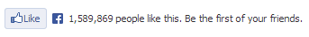

Adding a Facebook like button to the website is an easy task, however you may need to have an eye on few other performance related issue which may occur while adding it on to your website. When we add such button on our site, the webpage loading time decreases a bit. Here we will see, how to tweak the script (asynchronous script) in such a way so that it doesn’t affect webpage loading.
All the below scripts and codes are taken from Facebook developers page, I have just mentioned them in a way so that you can easily embed them in your theme template.
Facebook button Code of 6 types:
Note: In order to make a Facebook like button to render on a webpage. You need to add two elements to the theme’s template – Facebook like button code (choose any one out of the 6 provided below according to the need) and JavaScript (provide after the code of button types).
All of the below snippets has href field as <?php the_permalink() ?> which takes the url of the current page, this is useful when you want to have like button on all the posts or pages. you can simply add any of the below button code in your theme template such as single.php etc and the code will itself fetch the url of the current page/post.
However if you want to have like button for a specific url (such as website’s Facebook branding page) then you can specify the exact url in href attribute instead of <?php the_permalink() ?>
1) Standard layout with send button
As mentioned above, the data-href = “<?php the_permalink() ?>” is being used in all the below code snippets, the purpose of it to gather the current post/page url. If you want a like button for a particular page such as http://example.com/fb-page then the data-href needs to be updated as follows-
data-href="http://example.com/fb-page"
<div data-href="<?php the_permalink() ?>" data-width="450" data-show-faces="false" data-send="true"> </div>
2) Standard layout without send button

<div data-href="<?php the_permalink() ?>" data-width="450" data-show-faces="false" data-send="false"> </div>
3) button_count layout with send
<div data-href="<?php the_permalink() ?>" data-width="450" data-layout="button_count" data-show-faces="false" data-send="true"> </div>
4) button_count layout excluding send – This is the most common like button which is being used in our website too. Recommended!!

<div data-href="<?php the_permalink() ?>" data-width="450" data-layout="button_count" data-show-faces="false" data-send="false"> </div>
5) box_count + send
<div data-href="<?php the_permalink() ?>" data-width="450" data-layout="box_count" data-show-faces="false" data-send="true"> </div>
6) box_count like button alone
<div data-href="<?php the_permalink() ?>" data-layout="box_count" data-show-faces="false" data-send="false"> </div>
JavaScript
Important note: Please remember to replace the appid =xxxxxxxxxxxxx in the below scripts, with your Application id otherwise the script won’t work, if you don’t have a APP ID then you can refer this guide to get one for you.
Synchronous script: This is not the preferred script as it makes your website loads slow. The asynchronous scripts make sure that the loading of the script doesn’t interfere in loading of the webpage.
<div id="fb-root"></div>
<script>(function(d, s, id) {
var js, fjs = d.getElementsByTagName(s)[0];
if (d.getElementById(id)) return;
js = d.createElement(s); js.id = id;
js.src = "//connect.facebook.net/en_US/all.js#xfbml=1&appId=xxxxxxxxxxxxxx";
fjs.parentNode.insertBefore(js, fjs);
}(document, 'script', 'facebook-jssdk'));</script>
Asynchronous script: The Recommended one for better permanence of a webpage.
<div id="fb-root"></div>
<script>(function(d, s, id) {
var js, fjs = d.getElementsByTagName(s)[0];
if (d.getElementById(id)) return;
js = d.createElement(s); js.id = id;
js.async = true;
js.src = "//connect.facebook.net/en_US/all.js#xfbml=1&appId=xxxxxxxxxxxxxx";
fjs.parentNode.insertBefore(js, fjs);
}(document, 'script', 'facebook-jssdk'));</script>
The only difference in the above two scripts is that the second script has extra line js.async=true which makes it load asynchronously.
Add Facebook like button on Website
Now, you would have got the code for like button and script. It’s time to add them into your website’s templates. Take the appropriate button and script from above.
Where to paste the code?
Paste the script after opening of <body> tag and before closing of it (</body>). Mention the button code at the place where you want the like button to be rendered. Include it in single.php file in order to make it display only on posts.
If you are using any framework such as thesis, Genesis then you must be knowing where to include the code, in case of any questions just drop by a comment and we will get back to you as soon as possible.
Let Facebook understand your content by Adding Open Graph Meta Tags
Have you seen below meta tags before?
<meta property="og:locale" content="en_US"/> <meta property="og:type" content="article"/> <meta property="og:url" content="https://beginnersbook.com/2013/09/add-facebook-like-button-website/"/> <meta property="og:site_name" content="Easy Steps 2 Build Website"/> <meta property="article:author" content="" /> <meta property="article:publisher" content="https://www.facebook.com/es2bw" /> <meta property="og:title" content="How to add facebook like button to website" /> <meta property="og:description" content="Adding a Facebook like button to the website is an easy task, however you may need to have an eye on few other performance related issue which may occur while a(...)" /> <meta property="og:image" content="https://beginnersbook.com/wp-content/uploads/2013/09/fblike1-150x150.jpg" />
The above tags are nothing but facebook open graph meta tags, which helps Facebook to understand your content. Since, all of the required information has been provided to Facebook in the form of these meta tags, the Facebook like button and Facebook share actions are entirely different than, the normal webpage with no open graph tags. It basically improves the sharing and fblike experience.
How to add them on your website’s webpage?
Apart from manually adding these tags on your website, you can use plugins, if your site is running on WordPress. Plugins like WordPress SEO by Yoast and SEOPressor v5 can automatically add open-graph meta data to your every webpages. I will cover this topic in detail in some other post.
In the coming posts, we will see how to do add other social media sharing buttons (Google plus, StumbleUpon, LinkedIn & Twitter) on your website.
Let us know if you face any difficulty while setting up the above code for adding Facebook like button to your website. Also, do let us know if you find any bug or issue with any of the above mentioned codes/scripts.
Leave a Reply